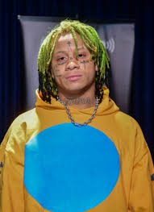

Trippie Redd – Srce trap‑emotikona
O umetniku
Trippie Redd za mene nikada nije bio samo još jedan umetnik u plejlisti. On je bio glas haotičnih emocija koje nisam znao da izrazim. Njegova muzika je poput dnevnika – sirova, iskrena, ponekad bolna, ali uvek stvarna. Kroz njegove pesme sam naučio da je u redu biti preosetljiv, zbunjen, glasan, slomljen i istovremeno kreativan i snažan.
U trenucima kada su osećanja bila preteška, njegove pesme kao „Love Scars“, „Topanga“ ili „Taking a Walk“ bile su poput izlaza – prostor u kojem sam mogao da budem sve što jesam, bez potrebe da se kontrolišem. Njegov glas, neispeglan i pun bola, delovao je kao da peva direktno iz duše, bez filtera, bez očekivanja – samo iskreno.
Trippie me je naučio da tuga i strast mogu da koegzistiraju. Da ljubav može da boli, ali i da izleči. Da umetnost dolazi iz najdubljih i najčudnijih delova nas samih. Njegov stil – od lirike do boje glasa – uvek je bio drugačiji. I upravo ta različitost mi je bila oslonac – znak da ne moram da budem kao svi drugi da bih bio svoj.
Za mene je Trippie Redd više od izvođača. On je postao osećaj. Osećaj mladosti koja boli, buntovnosti koja nije samo pozerska, i srčanosti koja se ne da sakriti. Kroz njega sam naučio da kreativnost ne traži savršenstvo, već iskrenost – a to je nešto što sam oduvek tražio i u muzici i u sebi.
Najpoznatiji albumi
- A Love Letter to You (2017) – Emocionalna iskrenost, „Love Scars“.
- !! (2019) – Eksperimentalni miks žanrova, „Topanga“.
- Trip at Knight (2021) – Pisao je o ličnim bitkama i slavi.
Nasleđe
Trippie Redd je postavio novi ton – emotivan, melanholičan, ali opasan. Umetnost sklanjanja maske danas mnogo znači mnogim mladim ljudima.